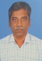
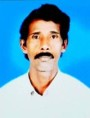
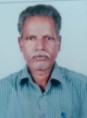
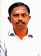
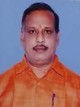
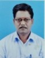
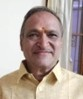
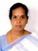
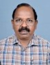
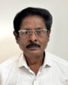

Mr. B. Dhanasekaran
B. தனசேகரன், M.Com (சேலம்)
Mr. P. Parameshwaran
P. பரமேஸ்வரன், M.Com (மதுரை)
Mr. G. Vedamoorthi
G. வேதமூர்த்தி, B.A. (தர்மபுரி)

Mr. E. Murthi
R. மூர்த்தி, B.Sc. (திருச்சி)

Mr. T. Elango
T. இளங்கோ (தஞ்சாவூர்)

Mr. T. Vajravel
T. வர்ஜரவேல் (வேலூர்)

Mr. T. Srinivasan
T. சீனிவாசன், M.Com (திருவாரூர்)

Mr. A.R. Jegadeesan
A.R. ஜெகதீசன் (விருதுநகர்)

Mr. N. Dhandapani
N. தண்டபாணி (கோவை)
Mr. I. Nazar Mohideen
I. நாசர்மைதீன் (ஈரோடு)

Mrs. N. Daisi Arul Mary
N. டென்சிஅருள்மேரி, M.Com (திருநெல்வேலி)

Mr. Jerome
ஜெரோம், M.A. (நாகர்கோவில்)

Mr. Sheik Rahmathulla
சேக்ரஹமத்துல்லா (கடலூர்)